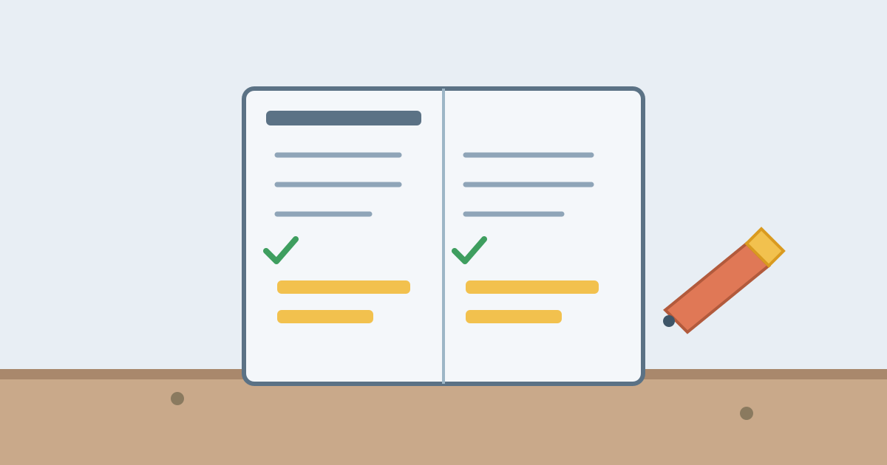

How to Take Useful Notes in a Meeting

Most meetings end the same way: everyone leaves with a slightly different memory of what was decided, and a week later somebody asks who was supposed to do what. The problem is rarely that people were not listening. It is that nobody wrote down the few things that actually matter, in a form anyone can use afterwards.
Good meeting notes are not a transcript. Nobody needs a word-for-word record of an hour-long conversation. What a team needs is a short, clear record of decisions made, actions agreed, and questions left open — written so that a person who missed the meeting can understand what happened in two minutes. That is a skill, and like any skill it can be learned with a simple method.
Why Most Meeting Notes Are Useless
The most common failure is trying to write down everything. A person who types frantically through a whole meeting ends up with pages of half-sentences and no clear outcome. They were so busy recording that they stopped thinking about what mattered, and the notes are too long for anyone — including the writer — to read again.
The opposite failure is writing down almost nothing: a few doodles and the date. These notes feel fine in the moment, because everything seems memorable while the discussion is fresh, but a week later the details have faded and the decisions are guesswork. Both failures come from the same mistake: writing without deciding in advance what a note is for.
A note has one job: to let the future reader — usually you, a week later, or a colleague who was not there — know what was decided and what happens next. Anything that does not serve that job is clutter, however interesting it seemed at the time.
Before the Meeting: Prepare in Two Minutes
Good notes start before the meeting does. Two minutes of preparation makes the whole job easier. Read the agenda, if there is one, and write down the three questions the meeting is supposed to answer. If there is no agenda, write one line about the meeting's purpose in your own words: "Decide the launch date" or "Choose between the two suppliers."
Then set up a simple page before anyone starts talking: the date, the people present, and the purpose at the top, with space below for decisions, actions and open questions. When the meeting starts, you are not scrambling to organise your page — you are listening, and you know exactly where each point belongs.
If you are the person taking notes for the group, say so at the start. It is much easier to ask "just to confirm, are we agreed on Friday?" in the moment than to guess afterwards. People expect the note-taker to check things, and a quick confirmation during the meeting saves arguments later.
During the Meeting: Capture Decisions, Not Words
During the meeting, listen for three kinds of sentences and write those down. First, decisions: "We will launch on the 15th" or "We are keeping the current supplier." Write the decision in a full sentence, with the date it applies to if there is one. A decision written as a fragment — "launch 15th?" — is useless a week later because nobody remembers whether it was agreed or only suggested.
Second, actions: anything somebody has agreed to do. Write the action, the name of the person who will do it, and the deadline. "Sara will send the revised budget by Thursday" is a note that can be followed up. "Budget" on its own is not. If no deadline is mentioned, ask for one, or write the date you will check back.
Third, open questions: the things the meeting could not settle. "Do we need legal approval before signing?" belongs on the list, with the name of the person who will find the answer. Open questions are the items most often forgotten, because the meeting moves on, and they are the ones that cause delays later.
Everything else — the background discussion, the jokes, the side stories — can be ignored. If a point matters, it will eventually become a decision, an action or an open question. If it never does, it did not need to be written down.
A Simple Format That Works Every Time
Use the same three headings in every meeting, and your notes become easy to scan. Start with "Decisions", a short numbered list of what was agreed. Follow with "Actions", a short list with three details each: what, who, and by when. Finish with "Open questions", the items still waiting for an answer.
Keep each entry to one line if you can, and use full sentences for decisions. Write in plain words, not shorthand only you understand, because these notes may be shared. If the meeting was about a document or a project, add one line at the top saying which one, so the notes make sense when someone finds them in a search months later.
Handwritten or typed, the format matters more than the tool. A paper notebook works well for short meetings because it is fast and distraction-free. A shared document works better when several people need the notes the same day. Choose whichever you will actually use, and stick to it.
After the Meeting: Turn Notes Into Action
Notes are only useful if somebody reads them, and the best time to make them readable is within a day, while the meeting is still fresh in your mind. Spend five minutes cleaning them up: finish any half-sentences, remove anything that turned out not to matter, and check that every action has a person and a date.
Then send them to the people who were there, and to anyone who missed the meeting but needs to know the outcome. A short message with the decisions and actions is enough; nobody needs the full page unless they ask for it. Sending the notes quickly also has a useful side effect: if you wrote something down wrong, someone will correct it while the memory is still fresh, instead of discovering the mistake a month later.
Finally, put the actions somewhere you will see them — your task list, your calendar, or a shared tracker. Notes that sit in a notebook nobody opens are the same as no notes at all. The meeting is only finished when its actions are visible somewhere they will be done.
Common Mistakes
The first mistake is trying to capture every word, which leaves no attention for thinking. The second is writing actions without names or dates, which means nobody is responsible and nothing has a deadline. The third is keeping the notes to yourself: if the decisions live only in one person's notebook, the team is working from memory, and memories disagree. The fourth is never reviewing the notes, so the same questions come up again in the next meeting. All four are easy to avoid once you know to look for them.
Frequently Asked Questions
Should I type notes or write them by hand?
Both work, and the best choice is the one you will stick with. Typing is faster and easier to share, and it works well in long meetings. Handwriting is slower, which forces you to summarise instead of transcribing, and many people remember more of what they write by hand. If you type, resist the urge to write everything; if you write by hand, make sure you can read it the next day.
What if I miss something important during the meeting?
Ask. A simple "Could you repeat the deadline?" or "Just to check, did we agree on Friday?" is expected from the note-taker, and people would rather repeat a point than have it recorded wrong. If you realise afterwards that something is missing, ask the organiser the same day, while the meeting is still fresh for everyone.
How long should meeting notes be?
As short as possible while still answering three questions: what was decided, who is doing what by when, and what is still open. For most meetings that fits on half a page. If your notes run to several pages, you are probably recording discussion instead of outcomes, and nobody will read them.
Conclusion
Useful meeting notes are short, structured and honest about what matters. Prepare for two minutes before the meeting, capture decisions, actions and open questions during it, and spend five minutes afterwards turning the notes into something the whole team can use. The goal is not a perfect record of everything that was said. It is a clear answer, a week later, to the question everyone asks after every meeting: what did we decide, and who is doing what next?